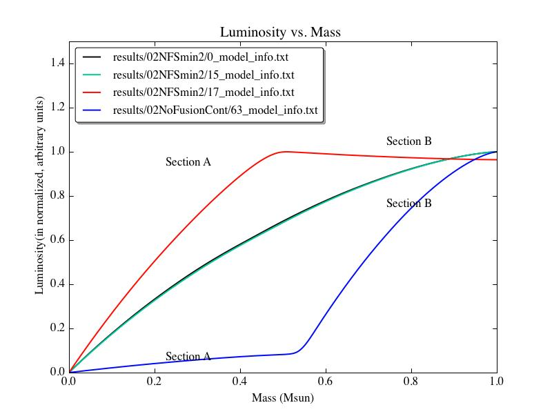

Upload my group
meeting presentation and advisor meeting notes to the wordpress blog
Email the people I
want to be on my quals committee
Go talk to the
people in the business office about computer purchase order stuff/
reimbursments/ etc.
The low-mass stellar
mass-radius relationship from last time:

Figure
0.1:
Low mass stellar
mass-radius relation taken from "Mass-radius relation of low
and very low-mass stars revisited with the VLTI" Authors:
Demory, B.-O.; Ségransan, D.; Forveille, T.; Queloz, D.; Beuzit,
J.-L.; Delfosse, X.; di Folco, E.; Kervella, P.; Le Bouquin, J.-B.;
Perrier, C.; Benisty, M.; Duvert, G.; Hofmann, K.-H.; Lopez, B.;
Petrov, R. Astronomy and Astrophysics, Volume 505, Issue 1, 2009,
pp.205-215
Link to the arXiv
article: http://arxiv.org/abs/0906.0602
Link to the ADS
entry: http://adsabs.harvard.edu/abs/2009A%26A...505..205D
|
Name
of this run
|
Input/Starting
Model
|
Mass
of the system (in Msun)
|
Parameter
being tweaked = new value
|
Version
of TheCode.f used to run the simulation
|
Results
|
|
02NFSmax1
|
02NoFusionCont,
from model #62
|
0.2
|
SMAX
(lum)= -1e30
|
thecodeNoFusion
|
Exactly
the same as the 02NoFusionFromStep62 from yesterday.
Interestingly,
it looks like the models that 'flip' require around 60-80
iterations to converge, while the other, normal models only
require 2-3 iterations.
Therefore, I
think the key may lie in reducing ITMX.
|
|
02NFItmx1
|
02NoFusionCont,
from model #62
|
0.2
|
ITMX
= 10
|
thecodeNoFusion
|
This
adjustment causes the run to 'stop: convergence not possible' at
the first 'flippy' timestep.
That
error occurs because the code only gets 3 tries to reduce the
timestep size before giving up.
The dTime
values for the two preceeding models were ~5e13 seconds. So, I
think the way around this error to set the initial timestep for
the run to 1e11 seconds, while keeping ITMX = 10.
|
|
02NFdTIM1
|
02NoFusionCont,
from model #62
|
0.2
|
dTIM
= 1e11
|
thecodeNoFusion
|
dTIM
is still not low enough (I'm guessing) by the time the simulation
encounters the 'flippy' step, though that step is pushed back by a
few. That's just because the original code is taking more
timesteps across the same interval of time, though.
Maybe if I take
the final step before the flip, and evolve it forward enforcing
really strict limits on the dTmx and dTim values...?
|
|
02NFdTIM2
|
02NFdTIM1,
from record #4
|
0.2
|
dTmx
= 1e13, dTim = 1e9, dTmn = 1e0
|
thecodeNoFusion
|
It
just... stops after 1 (or 0?) timesteps without any error message
or anything. Another mysterious stop!
Looking
at the input model's luminosity profile see below), I see that
it's starting from a pretty 'kinked' profile. By the time the
model reaches this state, it may be too late. So, let's try
starting this same simulation, but from record #62 of
02NoFusionCont and see how much of a difference that makes.

Figure
1
I
also wonder if that plateau in the luminosity profile is arising
due to the Crad/Cwrk settings that have been in the input files.
In particular, I reduced Crad to 1e-10 to get past a 'stop:
invstate' error earlier in the 0.2Msun no-fusion system's
evolution. I wonder if increasing Crad back to 1 will prevent this
strange luminosity profile from ever even developing...?
(Note
to self: check that the luminosity profile of that input model
isn't also already 'kinked')
(Response to
self: it is, quite badly. You have to go back to record #?? in the
02NoFusionCont run to get a perfectly smooth profile.)
|
|
02NFSmax2
|
02NoFusionCont,
from model #59
|
0.2
|
SMAX
(lum)= -1e30,
|
thecodeNoFusion
|
Stops
during model #610 (so, the model that would have been recorded
right after record #19) with a 'stop: no convergence' error.
(Again, one of those dTIM limitations...)
The
real question, though, is whether the models in this run start to
develop that 'kink' in their luminosity profiles...
Short
answer: yes. Longer answer: it does this in a really interesting
way. See Figure 2 below:

Figure
2
This
is really interesting for several reasons:
The
model right before the red profile develops (i.e. the green one)
is still perfectly smooth. So, that kink develops within ~40-50
iterations within a single timestep.
The
penultimate and initial profiles (green and black) for this run
barely differ. In other words, the luminosity profile is steady
over a long-ish period of time, and then all of a sudden, BOOM! A
discontinuity develops!
The
shapes of the final model from this run (red) and the final
converged model in the 02NoFusionCont run (blue) look the same,
only rotated 180 degrees from each other. (Well, actually, that's
not strictly accurate. If you flip the image 180 degrees, you can
see that they differ at the inner and outer boundaries.)
It
looks like the magnitudes of the slopes of blue section A and red
section B are roughly equal, while their signs are reversed.
Same
for red section A and blue section B.
Because of the
stuff mentioned in #3, I have a suspicion that this all has
something to do with how some slope is getting calculated. SMIN is
the only luminosity parameter involved with derivative
calculations (I think...), so the logical step is to tighten the
restrictions on that parameter.
|
|
02NFSmin1
|
02NoFusionCont,
from model #59
|
0.2
|
Smax
(lum) = -1e30, and Smin (lum) = 1e10
|
thecodeNoFusion
|
Results
are similar to 02NFSmax2, though I should note that this run
doesn't throw any errors, has a final model with a reasonable
luminosity profile, and could likely keep evolving forward in time
with no problems.

Figure
3
For the next
step, I'd like to see what happens when I decrease the luminosity
SMIN value even more.
|
|
02NFSmin2
|
02NoFusionCont,
from model #59
|
0.2
|
Smin
(lum) = 1.0
|
thecodeNoFusion
|
Results
very similar to 02NFSmin1-- luminosity flips look identical...
though that seems odd to me. Maybe there was a parsing error of
some sort going on? B/c their HR diagram evolution differs, as to
the shapes of their luminosity profiles after their first
luminosity 'flips.'
In any case,
the SMIN (luminosity) parameter doesn't have a huge effect on
whether or how these 'flips' arise, so I'm going to move on to
tweaking the Crad parameter.
|
|
02NFCrad1
|
02NoFusionCont,
from model #59
|
0.2
|
Crad
= 1
|
thecodeNoFusion
|
The
results are exactly like those from 02NFSmin2. Increasing the Crad
value has absolutely no effect.
Upon examining
how much the luminosity values change from model 3 to model 4 (the
first flip in this run), I think perhaps the next thing to do is
to decrease the SMAX (luminosity) value even more...
|
|
02NFSmax3
|
02NoFusionCont,
from model #59
|
0.2
|
Smax
(lum) = -1e28
|
thecodeNoFusion
|
This
run doesn't produce any strange luminosity 'flips,' though it
doesn't evolve to the age of 02NFSmin2's first flip. However, I
think a good next step would be to let this setup evolve forwards
in time for 100 timesteps, writing out put every step, and see if
it manages to evolve realistically.
|
|
02NFSmax3long
|
02NoFusionCont,
from model #59
|
0.2
|
NMOD
= 1000, NRIT = 25, and changed Smax (lum)
= +1e28 (rather than -1e28)
|
thecodeNoFusion
|
Crashed
on model #616 (25th model it computed in this run) with a 'stop no
convergence' (timestep problem).
<--
This was fixed by changing the SMAX (luminosity) value to a
positive number (rather than keeping it negative).
|